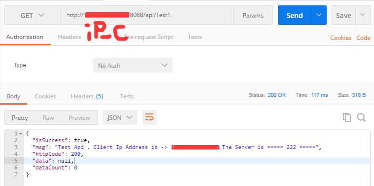

在大型网站中，负载均衡是有相当必要的。尤其在同一时间访问量比较大的大型网站，例如网上商城，新闻等CMS系统，为了减轻单个服务器的处理压力，我们引进了负载均衡这一个概念，将一个服务器的压力分摊到几个服务器上，一方面减轻了宕机的几率，另一方面也使得宕机后还要其他服务器可以继续稳定运行，提高了系统的健壮性。
这篇文章将要介绍的主要内容如下：
1.配置三台服务器
2.分别在三台服务器上部署相同的代码
3.使用Nginx实现负载均衡
我们的Nginx负载均衡器将部署在一台交互服务器上，配置与其他两台服务器的链接，所有的请求直接访问Nginx服务接口，然后Nginx负载均衡器将自行选择真实调用的服务器端口。
开发环境：Windows 7 x64 sp1 英文版 VisualStudio2017
部署环境：阿里云ECS实例 windows server 2012 x64 IIS7.0
ASP.NET WebApi2
使用ASP.NET webapi2写一个简单的返回json的接口，为了展示我们调用的是不同服务器上的接口，我们以数学形式分别生成三个接口服务，并本别部署到三台服务器的iis中。
public IHttpActionResult GetTest()
{
//throw new Exception_DG_Internationalization(1001);
string ip = Request.GetIpAddressFromRequest();
return OK("Test Api.Client Ip Address is -> " + ip + "The Server is ==== 333 ====");
}
我部署的三台服务器后面的数字分别是111,222,333。
注：return OK是本人自定义的返回格式，具体简单的代码可以直接return Json();
Request.GetIpAddressFromRequest();是本人扩展的获取ip地址的方法，具体实现请按自身情况实现。
我们将三个后台代码生成后，分别部署到三个服务器上。
为了保密服务器信息，以下我的所有ip地址都将以ip_A,ip_B,ip_C来标识
第三个是我们将要不熟Nginx的服务器：
部署好后，我们进行Nginx的配置：
下载Nginx http://nginx.org/en/download.html
然后解压到ip_C服务器，并打开conf文件夹下的nginx.conf
编辑内容如下
然后我们启动服务：
cmd命令切换到nginx的根目录下
这样服务就系统了...吐槽一句，为什么不提示一句服务启动成功呢..欸，不人性化！
然后我们打开任意一个接口测试工具，分别执行三次相同的请求：
请求一
请求二
请求三

可以发现，我们每一次的请求，调用的后台服务接口都不是同一个，这样就保证了在大量客户访问同一个服务器地址时候，可以将服务器的压力分别分摊到几个服务器上，达到了负载均衡的目的。